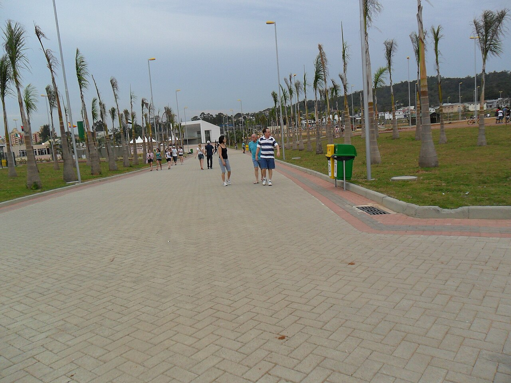

A Região Como um Forte Hub de Serviços e Saúde
Embora as fundações industriais de Criciúma continuem robustas, o aspecto moderno do desenvolvimento econômico do munícipio tem na prestação dos serviços especializados o seu principal viés contemporâneo. Criciúma assumiu um status natural de "cidade-polo" (o coração de toda a associação dos municípios da região carbonífera — AMREC) e grande referência comercial para quase trezentas mil pessoas que circundam o local, que vão rotineiramente até o centro para realizar negócios, consumir, estudar ou realizar tratamentos.
O setor da saúde e as grandes clínicas médicas, odontológicas e estéticas transformaram-se em modelos de extrema eficiência regional. O nível de qualidade hospitalar que outrora exigia que um paciente viajasse para Curitiba ou Porto Alegre agora se encontra de forma avançada nestas ruas do município.

A Força do Comércio Local e Parques Empresariais
O comércio local demonstra grande capilaridade e solidez, apoiado ativamente por infraestruturas recém modernizadas que trazem melhor deslocação pela Avenida Centenário. Além disso, a Associação Empresarial de Criciúma (ACIC) colabora arduamente para conectar lojistas, empresários de tecnologia (hoje temos ecossistemas como o Plural HUB voltados à inovação) e empreendedores rurais e prestadores de serviços.
O cidadão preza por um ambiente que forneça não só crescimento mas infraestrutura. Projetos abertos como o icônico Parque das Nações refletem a requalificação urbana que ajuda na atratividade de mão de obra para as PMEs (Pequenas e Médias Empresas) que estão contratando nesta fase.
E como o Mercado Local reage ao mundo Digital?
O desafio que noto, dialogando aqui, é que muitas marcas criadas durante nossa história empresarial de Criciúma, e que têm produtos altamente competentes, estão sendo ultrapassadas comercialmente por não darem o peso correto à apresentação em campo online. Hoje há excelentes médicos recém-chegados, empresas iniciantes e lojistas estruturando sites responsivos e dominando rapidamente a captação local feita via pesquisa e Google Maps, tirando mercado do negócio tradicional.
O criciumense procura qualidade, mas ele realiza a sua filtragem primária (a primeira impressão) na tela do celular. Quando o site de uma clínica transmite morosidade e erro, a confiança cai — independentemente do médico ser espetacular na vida real. Empresas que conseguem aliar o seu excelente valor presencial a um SEO técnico (Search Engine Optimization) e uma página web sofisticada saem em gigantesca vantagem na aquisição de clientes fiéis na cidade.
Evolução Digital Condizente com Sua Qualidade
Na Blum Digital levamos muito a sério a tradição empreendedora e de resultados da nossa região de Santa Catarina. Desmistificamos a presença técnica digital, otimizando o seu Google para captação constante e séria.
Compreender Nossos Serviços